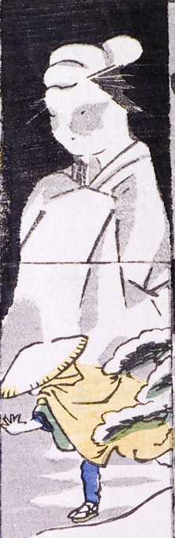

雪原に現れた大きな女。白い着物を身につけている。これを見て蓑笠姿の人物が逃げている。
著作者：一恵斎芳幾（歌川芳幾）／出典：親書誌：U426_nichibunken_0142：新板化物づくし；シンパンバケモノヅクシ／日付：2009／資源識別子：U426_nichibunken_0142_0004_0000
Copyright (c)2010- International Research Center for Japanese Studies, Kyoto, Japan. All rights reserved.